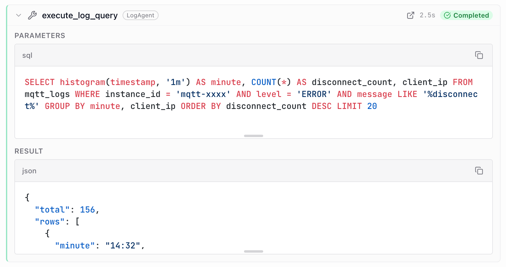
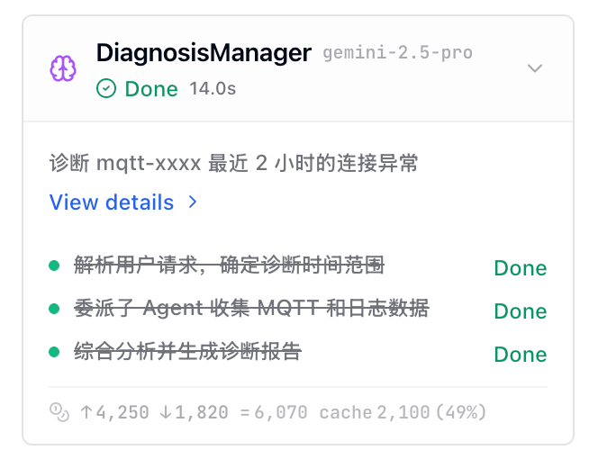
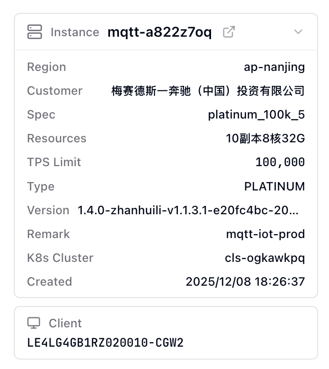
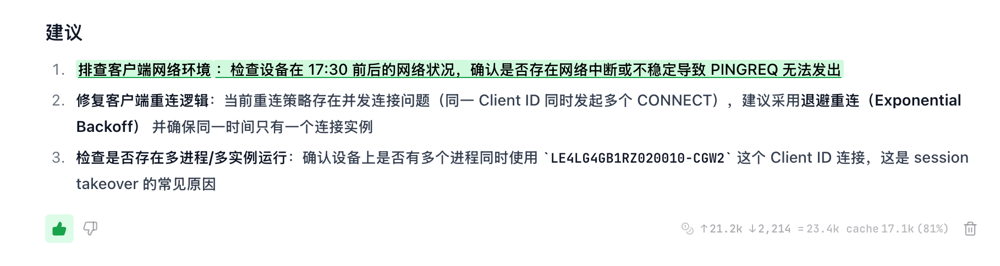
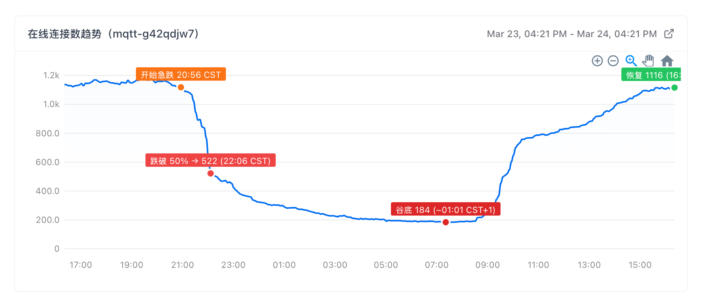

engineering whiteprint / tech sharing
MQTT 智能诊断平台的使用、架构与 Agent 开发经验
00 / route map
完整流程演示 / 知识沉淀
架构总览 / Agent 拓扑 / 多 Agent 排查 / 数据源与工具层 / 前端可观测性
有效上下文 / 工具设计 / 确定性输出 / 评估与进化路径
01 / demo / full flow
帮我诊断这个集群 mqtt-a822z7oq 下的客户端 LE4LG4GB1RZ020010，为什么 3 月 12 日 服务端没有给客户端发送 keep alive response，导致客户端掉线
把“服务端没回 keep alive”视为待验证假设，而不是直接采信。
Triage 解析时间，发现短 clientId，要求确认完整 ID。
先查相似历史，再让 LogAgent 验证当前日志；单客户端问题不把 Metrics 当主证据。
不是服务端漏发 PINGRESP，而是客户端停止 PINGREQ；服务端按 90s 阈值触发超时。
02 / demo / knowledge sedimentation
整批订阅被拒绝；后续同类问题可直接复用排查路径和业务建议。
真实日志客户端是 sim_client_19；“查不到”不能直接变成结论。
03 / architecture / overview
React / Chat UI / Sidebar / Charts / Feedback
FastAPI /agent SSE / proxy APIs / conversation / summary
LangGraph + Deep Agents / Orchestrator / Expert Agents
GraphQL / CLS / Prometheus / PostgreSQL / LLM APIs
自然语言问题进入诊断系统
04 / architecture / agent topology
从用户输入中抽取实例、客户端、消息、时间范围等诊断对象。
把自然语言问题整理成可执行上下文；补全缺失信息，过滤用户因果假设。
根据已验证上下文进入 Orchestrator、单专家 Agent，或直接回答快速查询。
instance / client / message / time
症状、范围、用户假设、待验证问题
Orchestrator / MQTTAgent / LogAgent / MetricsAgent / Direct answer
05 / architecture / investigation
自然语言里可能已经包含错误因果。
06 / architecture / data & tools
实例元数据、客户端会话、连接事件
MQTTAgent / set_contextProxy/Audit 日志、断连原因、订阅拒绝、消息链路
LogAgent / set_context趋势、聚合指标、Fleet TopK
MetricsAgentconversation、summary、全文检索、历史经验
Summary Search / Admin推理、报告、结构化 summary
Triage / Orchestrator / Summary Generator07 / architecture / observable ui




08 / lesson / context
角色、边界、停止条件、工具策略；直接约束 Agent 如何行动、何时停止、哪些事实必须验证。
catalog / SOP / query template；不塞全量知识，只提供“该查什么、怎么查”的目录。
good case 作为可复用经验，bad case 作为反面教材和行为修正信号。
让子 Agent 只携带与任务相关的局部上下文。
长结果先结构化摘要，保留可追溯证据。
大段日志、查询结果不直接挤占主上下文。
稳定消息顺序，降低重复推理成本并适配 KV cache。
09 / lesson / tool design
诊断订阅失败()
判断 keepalive 根因()
工具越细，选择越困难；SOP 固化在工具里，边界场景难调整；结论被黑盒化。
GraphQL 查询
CLS 查询
Prometheus 查询
Summary search
工具负责事实，skill 负责方法，Agent 负责判断。
10 / lesson / tool design
入口只给目录和触发条件：写 custom SQL、execute_log_query、断连分析、错误分布、客户端查找、消息消费、投递延迟等。
Client disconnects → proxy；Message loss → audit；Auth failures → auth。
例如 keepalive timeout：用 proxy log 的 Top disconnecting clients 模板。
填入 instance、client_prefix、topic、时间窗；由 execute_log_query 查询 CLS。
message LIKE '%disconnect%'
只做模糊文本搜索，缺少 topic_type、实例过滤、原因提取和聚合，容易把无关日志混进来。
__TAG__.namespace:"$instance" AND message:"keepalive_timeout"
| select count(*) as count,
regexp_extract(message, 'client-id=([^,]+)', 1) as client_id
group by client_id order by count desc
直接复用 catalog 中的 keepalive timeout 模板：先限定实例和原因，再提取 client_id 并按次数排序。
11 / lesson / deterministic output
```metrics-chart query: sum(rate(...)) time: 2026-03-12 unit: ops ```
Prometheus / GraphQL proxy 根据 spec 重新取数。
确定性组件渲染图表、排名和建议块。
12 / lesson / deterministic output
点位、排名、趋势来自真实接口。
大量数据输出由前端直接渲染。
同一份 spec 输出稳定结构。
标注、缩放、hover、跳转交给前端。

13 / lesson / evaluation
不可量化的东西，不可优化。
通过 Agent Middleware 与 LangGraph 事件流记录每一次 tool call、LLM 调用、Agent 调度和 token 成本，结构化追踪诊断流程。用户可以展开工具、查看任务列表和成本；团队获得可复盘的执行数据。
让用户给出评价，而不是靠评估 LLM 猜测。
支持 thumbs、文本高亮和 review comment。用户直接标出“这句有用”“这段错误”“这里应该怎么改”；系统记录真实用户判断，避免再引入一个模型去猜好坏。
把一次诊断转成可检索经验。
系统把对话、工具证据、用户反馈整理成 summary。good case 成为历史参考，bad case 保留失败原因和修正建议；后续相似问题可以先检索经验再排查。
从下层上下文精炼通用策略到上层。
把单次 bad case、工具调用和用户修正，精炼成更通用的 prompt 约束、skill 目录或工具边界。这个过程类似训练：不是记住一次错误，而是把局部反馈提炼成未来决策的先验。
14 / closing
感谢聆听